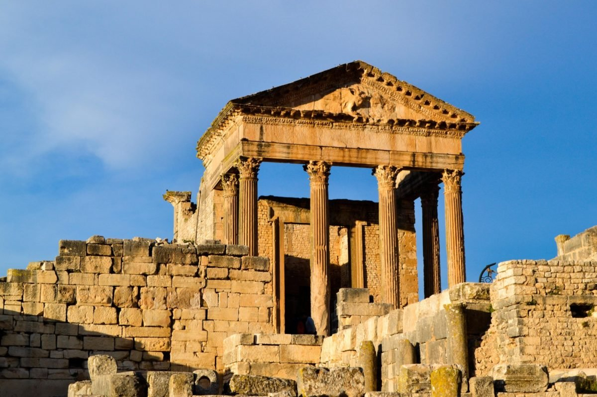

La Tunisie à l’histoire trois fois millénaire, regorge de sites historiques et monuments architecturaux qui démontrent une richesse et une grande diversité culturelle. Cet article récence les endroits parmi les plus beaux et les plus appréciés par les touristes.
Revenir a la page principalDans la petite bourgade d'El Jem s'élèvent les ruines impressionnantes du plus grand colisée d'Afrique du Nord, immense amphithéâtre où pouvaient prendre place 35 000 spectateurs. Cette construction du IIIe siècle illustre l'extension et la grandeur de l'Empire romain.
L’amphithéâtre d’El Jem est un témoignage exceptionnel de l’architecture romaine, notamment celle des monuments construits à des fins de spectacle, en Afrique. Situé dans une plaine au centre de la Tunisie, cet amphithéâtre, construit entièrement en pierre de taille, n’est ni creusé ni adossé à une colline. Il reprend en cela le modèle du Colisée de Rome sans toutefois être une simple copie conforme de l'édifice flavien. Ses dimensions (grand axe de 148 mètres et petit axe de 122 mètres) et sa contenance (évaluée à 35 000 spectateurs) le classent incontestablement parmi les plus grands amphithéâtres du monde. Sa façade comporte trois étages d’arcades de style corinthien ou composite. À l’intérieur, le monument a conservé la majeure partie de l’infrastructure de support des gradins. Le mur du podium, l’arène et les souterrains sont pratiquement intacts. Cette œuvre architecturale et artistique érigée vers 238 apr. J.-C. constitue un jalon important pour la compréhension de l’histoire de l’Afrique romaine. L’amphithéâtre d’El Jem témoigne également de la prospérité de la petite cité de Thysdrus (l’actuelle El Jem) à l’époque de l’empire romain.
L’amphithéâtre d’El Jem est l’un des rares monuments du genre et l’unique en Afrique à être bâti, non pas à flanc de coteau, mais en terrain plat et appuyé sur un système complexe de voûtes. Le monument d’El Jem est un des exemples les plus accomplis du type architectural romain de l’amphithéâtre, presqu’au même titre que le Colisée de Rome.
L’édification dans une lointaine province d’un bâtiment soigné et si complexe, destiné aux spectacles populaires, est symptomatique d’une certaine propagande romaine impériale.
Le monument a conservé, sans altérations, la plupart de ses composantes architecturales et architectoniques.
L’amphithéâtre d’El Jem est protégé par la Loi 35-1994 relative à la protection du patrimoine archéologique, historique et arts traditionnels et par un décret qui limite la hauteur des constructions à 5 mètres, sur un rayon de 300 mètres à partir du centre de l'amphithéâtre. Le Code du patrimoine accorde un droit de regard sur toute intervention autour du monument (zone sous contrôle), alors que le plan d'aménagement de la ville d'El Jem définit des zones de servitude autour du monument, des zones archéologiques, des zones sous contrôle et des cônes de vision afin de préserver les perspectives urbaines.
|  |
Avant l'annexion romaine de la Numidie, la ville de Thugga, construite sur une colline surplombant une plaine fertile, a été la capitale d'un État libyco-punique. Elle a prospéré sous la domination romaine et byzantine mais a décliné au cours de la période islamique. Les ruines visibles aujourd'hui témoignent de manière imposante des ressources d'une petite ville romaine aux frontières de l'Empire.
Le site archéologique de Dougga est situé dans la région du nord-ouest de la Tunisie, perché sur le sommet d'une colline à 571 m d'altitude dominant la vallée fertile de l'oued Khalled. Avant l'annexion de la Numidie par Rome, Thugga avait plus de six siècles d'histoire et a été, selon toute vraisemblance, la première capitale du royaume numide. Elle prospéra à l'époque romaine mais elle connut un déclin à partir de la période byzantine et au cours de la période islamique. Les ruines impressionnantes qui sont visibles aujourd'hui donnent une idée des ressources dont disposait une ville numide romanisée.
Le site archéologique couvre une superficie d'environ 75 ha. Ces vestiges d'une cité entière avec toutes ses composantes témoignent de plus de 17 siècles d'histoire. Ils constituent un ensemble exceptionnel qui illustre la synthèse entre différentes cultures : numide, punique, hellénistique et romaine. Les monuments romains furent intégrés au tissu urbain qui resta fondamentalement numide. En dépit de son importance relative dans la structure administrative de la province romaine d'Africa, Dougga possède un ensemble remarquable d'édifices publics, datant pour la plupart des IIe et IIIe siècles après J.-C. Dougga est considérée comme la ville africo-romaine la mieux conservée de toute l'Afrique du Nord. En tant que telle, elle illustre de manière exceptionnelle ce qu'était la vie quotidienne dans l'Antiquité.
Le site de Dougga est un exemple exceptionnel permettant d'illustrer au mieux la naissance d'une cité autochtone, son développement et son histoire à partir du second millénaire avant J.-C.
Le site de Dougga conserve dans son intégralité les vestiges d'une cité antique avec toutes ses composantes et offre le meilleur exemple connu de l'organisation d'une ville de fondation autochtone et de l'adaptation de son urbanisme au modèle romain.
L'importante collection épigraphique (plus de 2000 inscriptions libyques, puniques, bilingues, grecques et surtout latines) est d'un apport décisif pour le déchiffrement de l'écriture libyque et la connaissance de l'organisation sociale de la vie municipale des Numides. Elle témoigne du niveau de développement atteint par la cité au cours des IIIe et IIe siècles avant J.-C
Pendant environ deux siècles et demi, deux communautés juridiquement distinctes, l'une composée des habitants autochtones et l'autre formée des colons qui étaient des citoyens romains, allaient coexister dans la même ville et sur un même territoire. Elles allaient participer toutes les deux au même titre au développement et à l'épanouissement de la cité.
Tout en gardant un urbanisme foncièrement numide, Thugga s'est ainsi trouvée dotée d'une parure monumentale à la romaine. À cet égard, elle constitue un exemple représentatif d'une cité du Maghreb sous les rois numides et durant les premiers siècles de l'Empire romain.
Comparativement à des sites semblables d'Afrique du Nord, les ruines de la cité romaine et préromaine de Dougga sont inhabituellement complètes et bien conservées. En conséquence, elles illustrent de façon exceptionnelle ce qu'était la vie quotidienne dans une petite ville de province à l'époque romaine.
|
Chenini est un village troglodytique berbérophone du sud de la Tunisie situé à 18 kilomètres de Tataouine.
Saint Augustin estime que Kenini, dont le nom tirerait son origine de Canaan, est l'origine du mot Chenini. Cependant, dans le parler berbère de Tataouine, le verbe « chenna » signifie « mélanger ».
Il est surplombé par un ksar citadelle, ou kalâa, juché sur une butte à environ 500 mètres d'altitude. Il s'agit d'un lieu de stockage des réserves alimentaires et des biens de valeur qui servait également de refuge en cas d'attaque. Comme les ksour de Douiret ou Guermessa, il a « permis aux Berbères […] de se maintenir, tout en établissant des relations de clientèle et de protection avec les tribus arabes »1 arrivées notamment lors des invasions hilaliennes au xie siècle. « Lorsque le risque d'invasion ou de pillage [est] devenu moins important et avec la sédentarisation des berbères, le village a commencé à se développer sur les flancs de la butte et vers le bas » jusqu'à la création du nouveau village de Chenini vers 19602.
Son minaret blanc servait autrefois de repère aux caravaniers.
Lieu de tourisme sur le circuit des ksour de Tunisie, Chenini est également le nom de l'une des lunes de la planète de Luke Skywalker dans Star Wars dont de nombreuses scènes sont tournées dans la région. Des habitations troglodytes rénovées mais traditionnelles y servent d'hôtel touristique.
Le ribat de Monastir est une forteresse tunisienne située au bord de la mer Méditerranée, dans la ville de Monastir.
Considéré comme le ribat le plus ancien et le plus important du Maghreb, il est regardé comme le monument phare de Monastir.
Édifié en 796 par le général abbasside et gouverneur de l'Ifriqiya, Harthimâ Ibn A’yûn, il est agrandi du côté septentrional sous le règne des Aghlabides (ixe siècle) puis du côté méridional sous le règne de la dynastie fatimide, vers 966. Par la suite, des travaux effectués vers 1424, à l'époque hafside, augmentent notablement sa superficie pour atteindre 4 200 m2. Du xviie au xviiie siècle, de nombreux contreforts ainsi que des tours et des bastions polygonaux et circulaires sont ajoutés à l'édifice pour accueillir des pièces d'artillerie1. Dès le xe siècle, le voyageur, géographe et chroniqueur arabe Ibn Hawqal soutient que l'édifice est le plus grand ribat de l'Ifriqiya2.
Au cours du xie siècle, le géographe et historien andalou Al-Bakri laisse sur le ribat de Monastir la description suivante :
« C'est une forteresse très élevée et solidement bâtie. Au premier étage, au-dessus du sol, se trouve une mosquée où se tient continuellement un cheikh, rempli de vertu et de mérite, sur lequel repose la direction de la communauté3. »
La ville de Monastir est touchée par deux séismes d'une magnitude de 4 puis de 3,6 degrés sur l'échelle de Richter, les 18 et 19 octobre 2013. Des pans supérieurs du mur d'enceinte subissent alors des dégâts.
Le complexe que l'on peut admirer de nos jours résulte d'une longue évolution où agrandissements et transformations se sont succédé. Le noyau primitif de l'édifice présente à l'origine un plan régulier avec des façades massives accompagnées aux angles de tours cylindriques dont une tour vigie située au sud-est. La cour est bordée de galeries sur lesquelles s'ouvrent plusieurs pièces.
De ce ribat primitif subsistent l'aile méridional qui comporte le porche d'entrée, la tour sud-ouest, la tour vigie couronnée par un garde-corps crénelé et la salle de prière qui se trouve à l'étage.
Au cours du xe siècle, l'agrandissement du bâtiment est matérialisé par l'ajout d'un pavillon séparé de la façade primitive par une courette et renfermant à l'étage un oratoire voûté en berceau qui est divisé en sept nefs perpendiculaires au mur de la qibla et deux travées ; sur des piliers cruciformes reposent des arcs en plein cintre et en anse de panier.
À l'époque hafside, les défenses du monument sont renforcées pour faire face aux menaces d'invasions, œuvre qui est poursuivie sous le règne de Hussein II Bey (1824-1835) qui restaure l'ensemble de l'édifice avec l'adjonction de tours et de bastions
Le ribat abrite, depuis le 5 août 1958, un musée des arts islamiques situé au premier étage de l'aile sud. Recevant annuellement près de 100 000 visiteurs, il comporte des centaines d'œuvres notamment des fragments de bois sculpté provenant de la Grande Mosquée de Kairouan, des stèles funéraires en marbre, des céramiques lustrées, des feuilles manuscrites du Coran, des verreries ainsi que des pièces de monnaie en or ou en argent
La mosquée Zitouna , ou mosquée de l'olivier, est
la principale mosquée de la médina de Tunis.
Rattachée au malikisme, elle est le sanctuaire le plus ancien et le plus vaste de la capitale de la Tunisie.
Érigée sur une superficie de quelque 5 000 m2, la mosquée est dotée de neuf entrées et possède 184 colonnes
antiques provenant essentiellement du site de Carthage.
La mosquée a longtemps constitué un poste défensif tourné vers la mer, deux tours de contrôle subsistant
dans
les angles nord-est et sud-est du bâtiment.
Une légende raconte qu'à l'endroit où se trouve la mosquée se trouvait un lieu de prière antique et un
olivier, zitouna en arabe tunisien. Toutefois, l'explication la plus admise a été transmise au xviie siècle
par l'historien tunisien Ibn Abi Dinar, qui décrit la présence de la tombe de sainte Olive à cet endroit.
Des recherches récentes ont montré que la mosquée a bien été construite au-dessus d'une basilique
chrétienne. Avec l'avènement de l'islam, la basilique est transformée en mosquée, gardant sa dédicace mais
traduite en arabe.
La sainte est particulièrement vénérée en Tunisie parce qu'il est superstitieusement pensé que si le site et
sa mémoire sont profanés alors un malheur arrivera ; ceci inclut une croyance que lorsque ses reliques
seront récupérées, l'islam prendra fin. Cette légende ancillaire liée à la découverte des reliques de la
sainte est également répandue en Sicile, mais elle est aussi liée à d'autres saints.
En 1402, le roi Martin Ier de Sicile demande le retour des reliques de sainte Olive au sultan hafside
d'Ifriqiya, Abû Fâris, qui le refuse6. De nos jours, certains Tunisiens, qui la vénèrent encore, croient que
leur religion disparaîtra lorsque le corps de sainte Olive disparaîtra.
Fondation
Certaines sources attribuent la fondation de l'édifice au gouverneur omeyyade de Tunis, Abdallah ibn
al-Habhab, en 732 mais les faits indiquent que c'est le général ghassanide Hassan Ibn Numan, arrivé avec
ses compagnons dans le contexte de la conquête musulmane du Maghreb, qui réaffecte le lieu de prière antique
en 698 puis édifia le monument dès 704. Des recherches ont par ailleurs confirmé que la mosquée a été
construite sur les vestiges d'une basilique chrétienne, ce qui conforte la légende rapportée par Ibn Abi
Dinar sur la présence du tombeau de sainte Olive (martyrisée sous Hadrien en 138) à l'emplacement de la
mosquée.
De la mosquée édifiée sous le règne des Omeyyades, il ne reste presque rien car l'édifice est reconstruit en
totalité en 864 sous le règne de l'émir aghlabide Aboul Ibrahim et sur ordre du calife abbasside de Bagdad
Al-Musta`in. Une inscription sur la base de la coupole du mihrab indique que les travaux ont été exécutés
par l'architecte Fathallah.
Il s'agit de la deuxième mosquée construite en Ifriqiya et la deuxième plus grande mosquée de Tunisie après
la Grande Mosquée de Kairouan
C’est, incontestablement, le plus ancien et le plus prestigieux édifice religieux islamique érigé dans l’Occident musulman. Elle est considérée, dans le Maghreb, comme l’ancêtre de toutes les mosquées de la région, aussi bien que l’un des plus importants monuments islamiques et un chef-d’œuvre universel d’architecture. Elle a également été classée, avec l’ensemble historique de Kairouan, au patrimoine mondial de l’Unesco en 1988.
Située, en position excentrée, dans la partie nord-est de la médina de Kairouan, la Grande Mosquée est implantée dans le quartier intra-muros de Houmat al-Jâmi (littéralement « quartier de la Grande Mosquée »). Cet emplacement devait correspondre, à l'origine, au cœur du tissu urbain de la cité fondée par Oqba Ibn Nafi. Mais en raison de la nature particulière du terrain, traversé par plusieurs affluents d'oueds, l'orientation urbaine s'est faite en direction du sud26. À cela s'ajoutent les graves bouleversements qui ont marqué Kairouan, à la suite des invasions hilaliennes vers 449 de l'hégire (soit en 1057), et qui ont entraîné le déclin, aussi bien que le rétrécissement de la villeN . Pour l'ensemble de ces raisons, la mosquée n'est plus située au centre de la médina, et se retrouve ainsi positionnée en périphérie, à proximité des remparts.
Le monument est un vaste quadrilatère irrégulier, allongé dans la direction nord-sud, qui est plus long (avec 127,60 mètres) du côté oriental que du côté opposé (avec 125,20 mètres) et moins large (avec 72,70 mètres) du côté nord, au milieu duquel se dresse le minaret, que du côté opposé (avec 78 mètres). Il s'étend sur une superficie totale d'environ 9 000 m235. Vue de l'extérieur, la Grande Mosquée de Kairouan est un édifice aux allures de forteresse7, qui s'impose autant par ses murs massifs de couleur ocre de 1,90 mètre d'épaisseur composés de pierres de taille assez bien appareillées, d'assises de moellons et d'assises de briques cuites36, que par les tours pleines des angles mesurant 4,25 mètres de côté37, et les solides contreforts en saillie qui épaulent l'enceinte.
Ces derniers présentent une partie supérieure qui est soit en pente, soit plate. Sur les côtés est et ouest, des contreforts à toit plat sont relayés par d'autres à toit en pente. Le côté sud, flanqué aux deux extrémités de deux tours d'angle carrées dont celle du sud-ouest est ornée d'une colonne angulaire en marbre blanc, présente des contreforts à toit plat répartis à intervalles réguliers, alors que ceux du côté nord sont uniquement à toit en pente40. Les contreforts des côtés est et ouest sont généralement plus massifs et plus saillants que ceux des côtés nord et sud. De dimensions diverses, les contreforts ne sont pas tous de la même époque ; les plus anciens, construits en brique, reposent sur des socles en pierre de taille.
Les contreforts à toit plat, en particulier ceux de la façade méridionale qui datent du ixe siècle, sont antérieurs aux contreforts à toit en pente ajoutés à partir du xiiie siècle42. Plus qu'à une vocation défensive, les contreforts et les tours pleines servent davantage à renforcer la stabilité de la mosquée élevée sur un sol sujet au tassement43 ; d'ailleurs plusieurs banquettes de briques, dont la hauteur varie de 1,6 à 1,7 mètre et dont la profondeur peut atteindre quatre à cinq mètres, se trouvent à la base des murs et contribuent également à assurer leur solidité.
Bien qu'ayant une apparence sévère, les façades de l'enveloppe murale, scandées de puissants contreforts et d'imposants porches, dont certains sont surmontés de coupoles, confèrent au sanctuaire un aspect jugé saisissant et plein de grandeur
« L'Histoire s'attache aux lieux qu'elle a une fois choisis » selon Serge Lancel2. Force est de
constater que la géographie compta pour beaucoup dans le rôle de Carthage, la grande cité étant
comparée à un « navire à l'ancre » par Strabon3. La localisation des villes chez les Phéniciens
répondait à la double exigence d'ouverture sur la mer et de protection vis-à-vis de l'intérieur des
terres. Les fondations de Tyr, Sidon et Gadès s'inscrivaient dans ce cadre4.
Davantage que la colonie plus ancienne d'Utique, Carthage paraît favorisée par la géographie. Elle
se situe à la frontière des deux bassins de la mer Méditerranée, donc sur un emplacement très
propice aux échanges. Au fond du golfe de Tunis, face au djebel Boukornine, l'antique Carthage se
présente tel un éperon barré de collines dont la principale est Byrsa, territoire facile à défendre
et qui plus est bordé par la mer sur trois de ses côtés. Polybe en parle comme d'une « péninsule
presque entièrement entourée soit par la mer [la sebkha Ariana n'était pas encore fermée et formait
une baie], soit par un lac et rattachée au continent par un isthme barré et par une chaîne de
collines difficiles à franchir »5.
Protégée du côté de la mer, la cité apparaît préservée également par les collines et par le lac de
Tunis, la présence des deux sebkhas renforçant cette particularité.
Bien que le site reste assez pauvre en édifices complets, le terrain est jonché de fragments des marbres les plus précieux6. Parmi ces fragments figurent deux ou trois variétés de marbre blanc statuaire — provenant probablement des carrières de Paros et de Luni — et une variété de marbre du Pentélique, plusieurs variétés de marbre cipolin, de nombreux fragments de marbre jaune de Sienne, du marbre connu en Italie sous le nom de Pavonazzo, du porphyre feldspathique en grande quantité — parfois en blocs de plusieurs pieds cubes — et du porphyre rose d'Égypte.
Pacho pense que, comme à Cyrène, le territoire de Carthage n'offre pas de matériaux précieux, mais
abrite plutôt des matériaux, comme le marbre, le porphyre et le granite, étrangers à la cité et
importés de loin6. De Buch, savant géologue de Berlin et Mesnard de La Groye, ancien enseignant de
géologie au Collège de France, ayant étudié ces fragments, pensent qu'ils proviennent de carrières
d'Italie et de Grèce6.
Des notes sur la Cyrénaïque de Frederick William Beechey rapportent aux alentours de Carthage la
présence d'un conglomérat de grès et d'un calcaire sans fossiles et donc peu solide
Histoire des bâtiments
Le palais du Bardo, dont le musée fait partie, est un ensemble de bâtiments
édifiés à partir du xve siècle. Comme les autres palais des souverains de Tunis, tels ceux de La Marsa,
Carthage, Hammam Lif, La Goulette, Mornag et La Manouba, ce palais a été construit à environ 4 kilomètres en
dehors de la médina de Tunis, au milieu d'une grande plaine. Il emprunte son nom au mot espagnol prado qui
signifie pré ou jardin
Le botaniste français René Desfontaines, qui visite la régence de Tunis à la fin du xviiie siècle, en laisse la description suivante :
« Le bey réside dans un joli château qu'on appelle le Bardo, situé au milieu d'une grande plaine, à trois quarts de lieue nord de la ville. Ce château est fort ancien : Léon l'Africain nous apprend que, de son temps, les rois y faisaient déjà leur séjour. Le mur qui l'entoure est bien bâti, et défendu par quelques pièces de canon placées du côté de la porte d'entrée. La cour du bey est nombreuse ; les officiers qui la composent sont, en général, très honnêtes et très polis envers les étrangers4. »
Selon Paul Sebag, le palais a été construit sur le modèle des résidences princières de l'Andalousie
musulmane, avec l'aide d'artistes andalous3.
Le palais a bénéficié de plusieurs restaurations et extensions durant le règne des beys mouradites :
Hammouda Pacha Bey (1631-1666) restaure et embellit ainsi le palais et en fait la résidence permanente de la
dynastie5. À partir du xviiie siècle, les beys husseinites successifs font agrandir et embellir leurs
possessions du Bardo ; une mosquée, des salles d'apparat parmi lesquelles une salle de justice et une salle
pour les audiences beylicales, ainsi que des fortifications complètent le dispositif. Ultérieurement, le mur
méridional du palais est remplacé par une esplanade.
À partir de 1840, l'École militaire du Bardo occupe une partie des structures durant un quart de siècle7. Un
hôtel de la monnaie y frappe les monnaies de la régence de Tunis entre 1847 et 18917, l'hôtel de la monnaie
et l'école militaire devenant par la suite une caserne destinée à la garde beylicale. Le palais de Ksar
Saïd, qui a vu le 12 mai 1881 la signature du traité du Bardo instaurant le protectorat français de Tunisie,
est situé quelques mètres plus loin. L'ensemble résidentiel constitue ainsi une véritable cité où vivent
environ 800 personnes8.
Construit par des architectes tunisiens, le Grand Palais, lieu de résidence du bey de Tunis, est construit
dans la deuxième moitié du xixe siècle sous l'impulsion de Mohammed Bey puis de Sadok Bey9. Mohamed Yacoub
dit de lui qu'il « constitue un monument fort représentatif du luxe et du raffinement qu'a connus
l'architecture tunisienne durant l'époque beylicale. Il témoigne également du caractère éclectique de l'art
de cette époque, dans lequel les apports locaux se mêlent aux influences andalouses, asiatiques et
européennes »9,10.
À partir d'octobre 1882, avec la mort de Sadok Bey, son frère et successeur Ali III Bey, installé dans son
palais de La Marsa, ramène les femmes du bey défunt (dont Lalla Kmar) dans son harem ; les bâtiments du
harem de Sadok Bey au Bardo, désormais inutilisés, sont cédés aux autorités du protectorat dès le mois de
novembre et abritent les collections antiques dès 1888. Le palais de Mahmoud Bey abrite pour sa part les
collections arabes dès 190011. En 1899, les autorités adjoignent au Grand Palais un second espace, le Petit
Palais construit en 1831-1832, qui abrite désormais les collections d'art islamique12.
De nos jours, le musée du Bardo prend place dans le Grand et le Petit Palais auquel on accède par la façade
à portiques et colonnettes de marbre rouge aménagée en 196813. Le bâtiment adjacent, dont les anciennes
salles du trône et de justice, abrite le siège de l'Assemblée des représentants du peuple auquel on accède
par le monumental escalier des lions, dont on trouve la représentation sur le billet de vingt dinars.
Le mausolée construit du vivant de Bourguiba, en 1963, selon les caractéristiques de l'architecture
traditionnelle (style arabo-musulman moderne), se trouve dans la partie occidentale du cimetière Sidi El
Mézeri, le principal lieu de sépulture de la ville, au bout de l'allée principale longue d'environ 200
mètres et large de trente mètres.
L'édifice, encadrés par deux minarets de 25 mètres de hauteur, est surmonté d'un dôme doré qui est lui-même
entouré de deux coupoles vertes. La porte d'entrée du mausolée ainsi que la grille qui sépare celui-ci du
reste du cimetière sont deux beaux exemples de l'art tunisien.
Il abrite non seulement le corps du président défunt et de sa première femme Mathilde, mais aussi ceux de
ses parents et de ses frères, ainsi que d'autres membres de la famille dans deux autres salles. Il a été
agrandi en 1978.
Dans le mausolée se trouve un petit musée où sont conservés quelques effets personnels du président
Bourguiba : son bureau du palais présidentiel de Carthage, ses stylos, passeports et carte d'identité, ses
lunettes ainsi que ses photos et ses costumes (occidental et traditionnel : jebba, chéchia, fez)2.
Le 21 janvier 2021, un arrêté en fait un monument classé
La cathédrale Saint-Vincent-de-Paul de Tunis, officiellement appelée cathédrale Saint-Vincent-de-Paul et
Sainte-Olive ou simplement cathédrale de
Tunis, est la cathédrale de rite catholique de la ville de Tunis (Tunisie).
Construite entre 1893 et 1897, elle porte le nom de saint Vincent de Paul, le fameux fondateur des
lazaristes et des filles de la charité et qui fut — alors qu'il était jeune prêtre — capturé puis vendu
comme esclave à Tunis au tout début du xviie siècle. La cathédrale est également placée sous le patronage de
sainte Olive de Palerme, martyre morte à Tunis au ve siècle.
La cathédrale remplace le plus ancien monument chrétien de la ville, la chapelle qu'avait construite le père
Jean Le Vacher en 1650 et dont l'autel était surmonté d'une statue du bienheureux Antoine Neyrot1. Autour de
la chapelle s'étendait un cimetière chrétien, l'un des plus anciens de Tunis.
Elle succède à une pro-cathédrale — la cathédrale du diocèse étant à Carthage — située un peu plus bas sur
l'avenue de la Marine et dont le cardinal Lavigerie pose la première pierre le 7 novembre 1881. Construite
en quelques mois sans tenir compte de la nature du terrain, cette première cathédrale s'était dégradée
rapidement.
br
Le cardinal Lavigerie pose la première pierre de la nouvelle cathédrale le 19 mai 1890, au lendemain de la
consécration de la cathédrale de Carthage. Les travaux ne commencent toutefois que le 1er septembre 1892. La
construction emploie continuellement, pendant cinq ans, 60 à 70 carriers à Djebel Oust et 140 à 150
ouvriers.
Faute de moyens financiers pour achever les tours, la nouvelle cathédrale est inaugurée à Noël 1897 comme
étant la cocathédrale de l'archidiocèse de Carthage avec des clochers provisoires en bois. Les deux tours
sont achevées en 1910 par l'architecte Louis Queyrel2.
En 1997, la cathédrale fait l'objet de nombreux travaux de réhabilitation qui incluent la restauration de la
façade, la réparation des toitures et des murs ainsi que la remise en état de l'orgue considéré comme l'un
des plus anciens d'Afrique.
En 1998, le pape Jean-Paul II, en visite en Tunisie, est accueilli dans la cathédrale.
La cathédrale actuelle se situe sur la place de l'Indépendance, carrefour entre l'avenue Habib-Bourguiba et
l'avenue de France, face à l'ambassade de France. Elle est bâtie dans un style romano-byzantin .
Les plans sont élaborés par l'architecte Bonnet-Labranche : une croix latine pourvue d'un transept peu
débordant.
La façade est divisée en trois parties : une travée centrale, dont la décoration évoque l'église
Saint-Augustin à Paris, et deux tours2. Les tours sont de plan carré et couronnées par des dômes en forme de
tiare qui rappellent ceux de la Basilique du Sacré-Cœur de Montmartre.
La fresque située au-dessus du chœur est l'œuvre du peintre français Georges Le Mare. Elle est exécutée de
1928 à 1930 et représente trois idées au sein d'une même surface : à gauche, l'arrivée du père Jean Le
Vacher en Tunisie pour plaidoyer en faveur des esclaves auprès du bey de Tunis au cours du xviie siècle ; à
droite, la Tunisie du début du xxe siècle ; au centre, l'apothéose de saint-Vincent-de-Paul.
Sous la cathédrale est préservée une crypte qui s'étend sous toute l'étendue de l'abside. Les murailles sont
couvertes de plaques funéraires et des tombeaux anciens se dressent encore à l'intérieur.